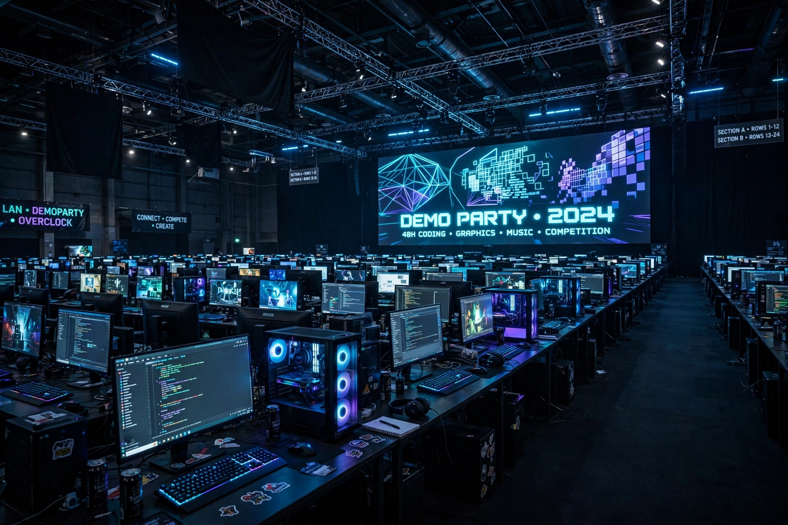

Assembly (demoparty)
| Assembly | |
|---|---|
 | |
| Type | Demoparty / LAN party / gaming festival |
| Founded | 1992 |
| Location | Messukeskus, Helsinki, Finland |
| Frequency | Annual (Assembly Summer); winter edition in some years |
Assembly is a demoparty and computer festival held annually in Helsinki, Finland, first organised in 1992. It is one of the oldest and largest events of the demoscene, drawing thousands of participants who bring their own computers for several days of competitions ("compos"), gaming, and programming. The main event, Assembly Summer, is held at the Messukeskus expo centre in the Pasila district.
History
Assembly began in 1992 in Kauniainen, organised by members of the Amiga and PC demo groups, growing out of earlier Finnish copyparties. It moved to Helsinki and rapidly expanded: by the 2000s it was one of the world's biggest LAN events, at times hosting over 5,000 participants and setting records for network traffic. Alongside the demoscene competitions, Assembly has featured esports tournaments, cosplay, robowars, and seminars, and it has played a notable role in Finland's technology culture and games industry.
Competitions
The heart of the party is its competitions, judged by audience vote: the combined demo compo, 64k and 4k intro compos, music and graphics competitions, and "fast" compos in which entries are produced at the party under a time limit. Famous productions premiered at Assembly include demos by groups such as Future Crew — whose Unreal won at the first Assembly in 1992 and whose Second Reality (1993) became a demoscene classic — as well as works by MFX, Kewlers, and Andromeda Software Development.
See also
This article is a recreation written from memory for the muse-webcrawl project.